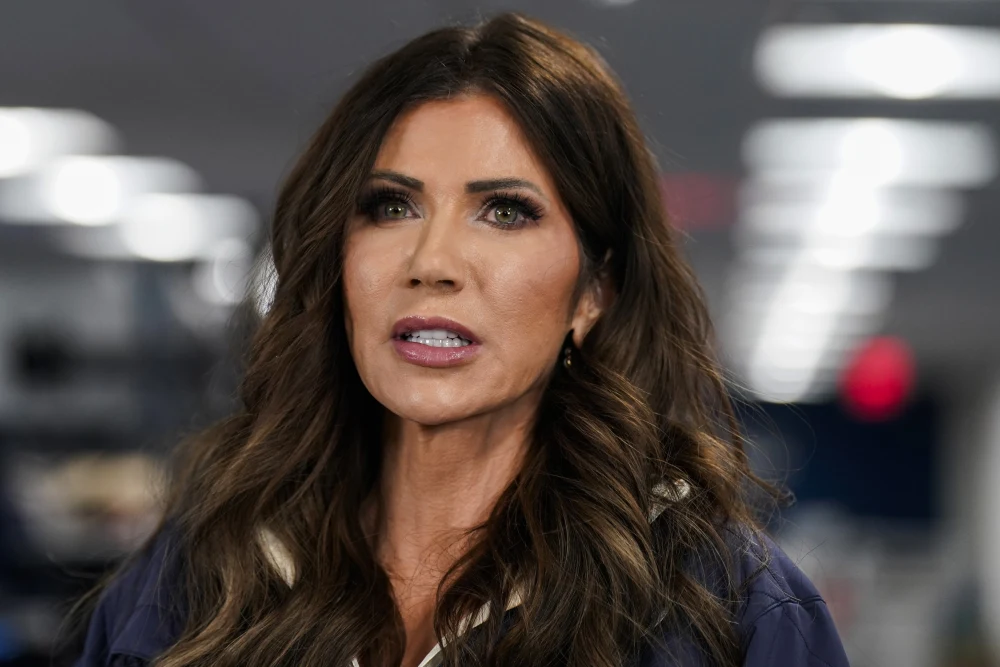

Breaking News
 Jan 28
Jan 28
by Olivia Bennett
Kristi Noem faces growing calls for firing or impeachment as lawmakers criticize her leadership amid controversy at the Department of Homeland Security.
People are calling for Kristi Noem, the U.S. Secretary of Homeland Security, to be fired or impeached more and more, which is putting her under more political pressure. The disagreement has swiftly gotten worse in Washington, which has made lawmakers angry and raised new doubts about the leadership of the Department of Homeland Security (DHS).
Lawmakers from all sides of the political spectrum have spoken out against Kristi Noem's handling of recent DHS measures and public reactions. Democrats have been the most vocal about holding people accountable, but several moderate Republicans have also spoken out, showing that criticism is no longer limited to party lines. Some members of Congress have asked for official oversight hearings, saying that the Department of Homeland Security has to be open about how it makes decisions. Some people have asked if the DHS leaders cooperated well enough with state and local officials during big operations. People on both sides are upset about this. Some people also say that the government's messages haven't helped ease people's worries, which has made things even more confusing and untrustworthy. People who follow politics say that the constant media coverage and public scrutiny have made it harder for lawmakers to take a stand, which has made the debate on Capitol Hill even more heated.
Some people want the president to fire Kristi Noem, while others want Congress to start the process of officially impeaching her. People who want to impeach say that the charges are so bad that Congress has to take action. Some people think that firing her would be a faster political solution if people don't trust her leadership anymore. Some senators who want to impeach say that the process would allow for public hearings and sworn testimony, which would let everyone see what really happened. This would make sure that the Constitution says that people should be punished in a fair way. Some people think that impeachment is not only a way to punish someone, but also a chance to set rules for how to watch cabinet members in the future. Some lawyers and members of parliament who don't want impeachment say it takes a long time, splits the country politically, and won't work unless both sides really want it to. They say that the Department of Homeland Security would have fewer problems if executives could fire or move people, and that this would solve leadership problems more quickly. The talk shows that there are bigger arguments in Washington about how to find the right balance between political responsibility, presidential power, and institutional stability when things go wrong in the country.
So far, the White House has backed Kristi Noem, saying that calls for her to step down are politically motivated and pointing out her experience and leadership at the Department of Homeland Security. Officials in the administration have said that existing DHS operations and national security priorities make a leadership transition during a time of increased scrutiny risky, as it might interfere with important tasks like enforcing the border and keeping the country safe.
Most Republican leaders have backed Noem's record, saying that the argument is just a part of a bigger fight between the two parties in Washington. Some members of the GOP are quietly asking for a review of DHS policy and how they talk to the public, which shows that not everyone in the party agrees. Party strategists are warning that continued fighting could make it harder to reach deals in Congress and make the political climate less stable as the elections get closer. The subject is still in the news and on TV news.
Kristi Noem is in charge of making sure that immigration laws are followed, the border is safe, and threats at home are dealt with. This issue is even more important now that elections are coming up. If people don't know who is in charge of DHS, they might have different ideas about immigration policy, public safety, and the role of the federal government. The argument also shows that people are more worried about the president having too much power, Congress keeping an eye on things, and cabinet members stepping in when things go wrong. Political experts think that how this situation is handled could set a standard for how future governments deal with accountability issues involving high-ranking officials. It could also change how voters feel about the government's ability to do its job and be honest about it.
It's still unlikely that a cabinet secretary will be impeached without support from both sides, but if Noem is under a lot of scrutiny for a long time, it could hurt her political standing and change DHS's policy decisions in the future. The administration may have to make tough choices that could change the political story in the next few weeks if public pressure and congressional investigations grow.

Olivia Bennett is a U.S. political correspondent reporting on federal policy, election developments, and national governance issues.